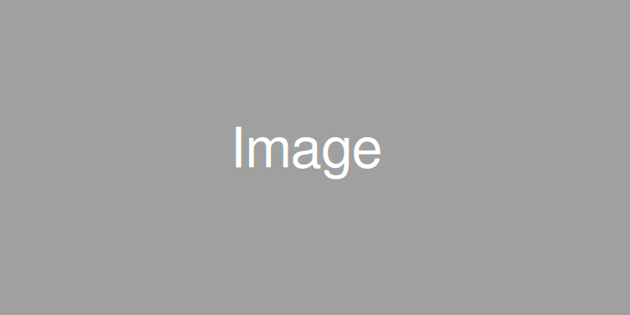

About
INDEXASFramwork is a lightweight responsive framework featuring all the basic plugins and functionality you will need. ASFramework will be released as a html site as well ported into themes for MVC platforms such as Opencart, Codeigniter and wordpress. This project started out as an experiment with SASS and media queries and has snowballed. ASFramwork is a lightweight responsive framework featuring all the basic plugins and functionality you will need. ASFramework will be released as a html site as well ported into themes for MVC platforms such as Opencart, Codeigniter and wordpress. This project started out as an experiment with SASS and media queries and has snowballed.
Responsive Slides
Responsive image slider. where possible also specify your image dimensions on the html tag as it improves load time, this can be done in percentages. Intro text here We’ll start out by creating a very simple SCSS file. Since SCSS is an extension of CSS3, our first file will start out as plain CSS. Open up a new file called style.scss. We’ll start out by creating a very simple SCSS file. Since SCSS is an extension of CSS3, our first file will start out as plain CSS. Open up a new file called style.scss. We’ll start out by creating a very simple SCSS file. Since SCSS is an extension of CSS3, our first file will start out as plain CSS. Open up a new file called style.scss
Responsive/retina Images
Responsive images by default. If you have a retina device the image above is black, if not its grey. All images have retina support (including those in the slider above.) just create a @2x copy (imagename@2x.jpg) and place it in the same folder. Intro text here We’ll start out by creating a very simple SCSS file. Since SCSS is an extension of CSS3, our first file will start out as plain CSS. Open up a new file called style.scss. We’ll start out by creating a very simple SCSS file. Since SCSS is an extension of CSS3, our first file will start out as plain CSS. Open up a new file called style.scss. We’ll start out by creating a very simple SCSS file. Since SCSS is an extension of CSS3, our first file will start out as plain CSS. Open up a new file called style.scss
Responsive Videos
Responsive videos by default (youtube, vimeo, vip.tv, kickstarter) Intro text here We’ll start out by creating a very simple SCSS file. Since SCSS is an extension of CSS3, our first file will start out as plain CSS. Open up a new file called style.scss. We’ll start out by creating a very simple SCSS file. Since SCSS is an extension of CSS3, our first file will start out as plain CSS. Open up a new file called style.scss. We’ll start out by creating a very simple SCSS file. Since SCSS is an extension of CSS3, our first file will start out as plain CSS. Open up a new file called style.scss
Download
ASFramwork is a lightweight responsive framework featuring all the basic plugins and functionality you will need. ASFramework will be released as a html site as well ported into themes for MVC platforms such as Opencart, Codeigniter and wordpress. This project started out as an experiment with SASS and media queries and has snowballed. ASFramwork is a lightweight responsive framework featuring all the basic plugins and functionality you will need. ASFramework will be released as a html site as well ported into themes for MVC platforms such as Opencart, Codeigniter and wordpress. This project started out as an experiment with SASS and media queries and has snowballed.